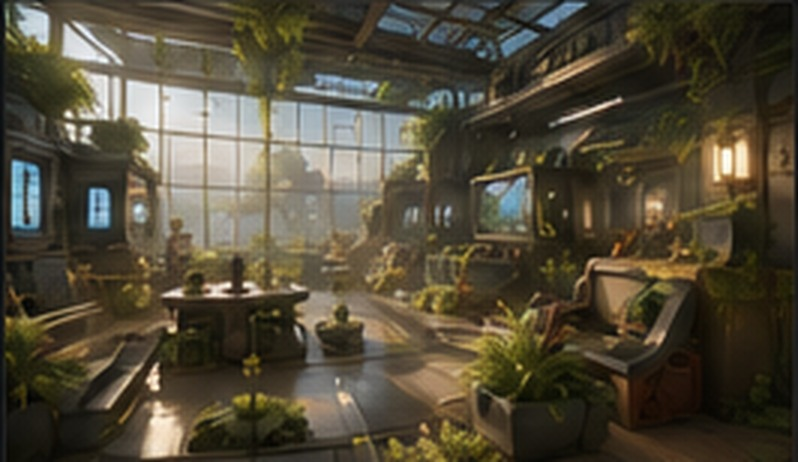

Unreal Prototyping Lab — MVP
Collaborative project developed within the laboratory I created and teach.

Project Overview
The portfolio purpose of this project is different from Hollow Graves: it demonstrates shared authorship, collaborative technical production, scope, integration, leadership and the ability to work inside a team.
My Role
- Game & Systems Design
- Technical Design & Blueprint Implementation
- Level Design Direction
- Production & Scope Management
- Code / Design Reviews
- Mentorship & Workflow Design
Contribution Breakdown — Placeholder
Game & Systems Design — 35%
Technical Design / Programming — 25%
Level & Encounter Design — 15%
Production / Leadership — 25%
Team — Replace With Real Credits
Assistant AEnvironment Art
Assistant BGameplay Programming
Assistant CAnimation
Assistant DUI / UX
Assistant ESound Design
12Weeks Development
5People Core Team
6Core Systems
1Playable MVP